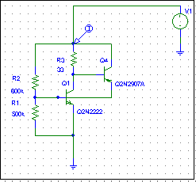

| HOME | PERSONAL | PROJECTS | LINKS |
da inserire in serie ad ogni apparecchio

La centralina commuta da off (cornetta giù) a on quando la corrente raggiunge crescendo il valore di 10mA.Il passaggio inverso accade a 25mA.
Quando viene sollevato un apprecchio telefonico, la tensione ai capi della linea scende dal valore di 50 V a circa 10 V.
Il bipolo S fa sì che l'apparecchio commuti su on solo se la tensione della linea è di 50 V, poi si mantiene su on anche quando la tensione scende.
Un secondo apparecchio che voglia inserirsi alla linea troverà un valore di tensione troppo basso affinchè il bipolo inneschi.
| HOME | PERSONAL | PROJECTS | LINKS |